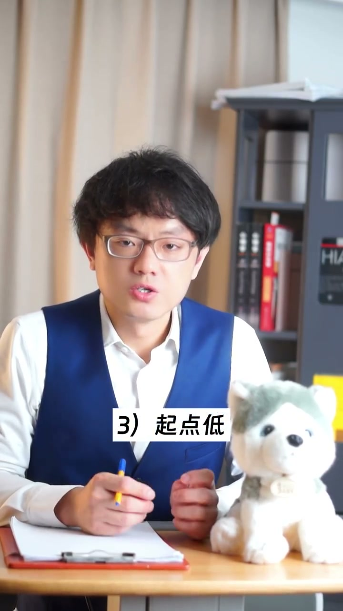
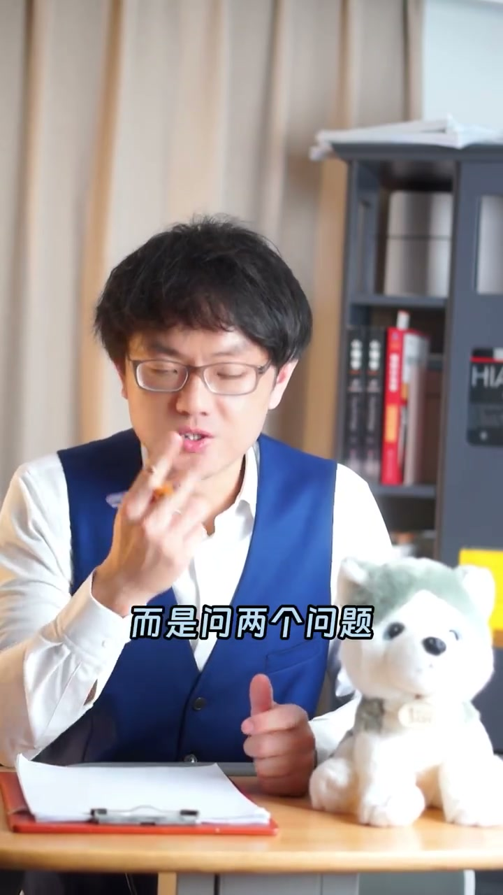
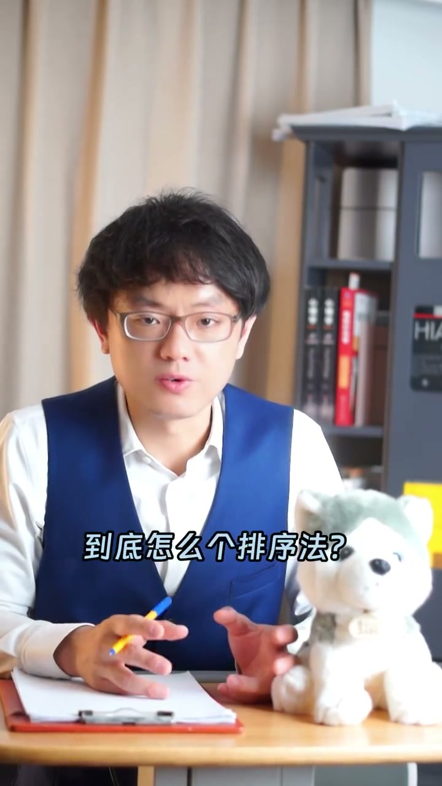
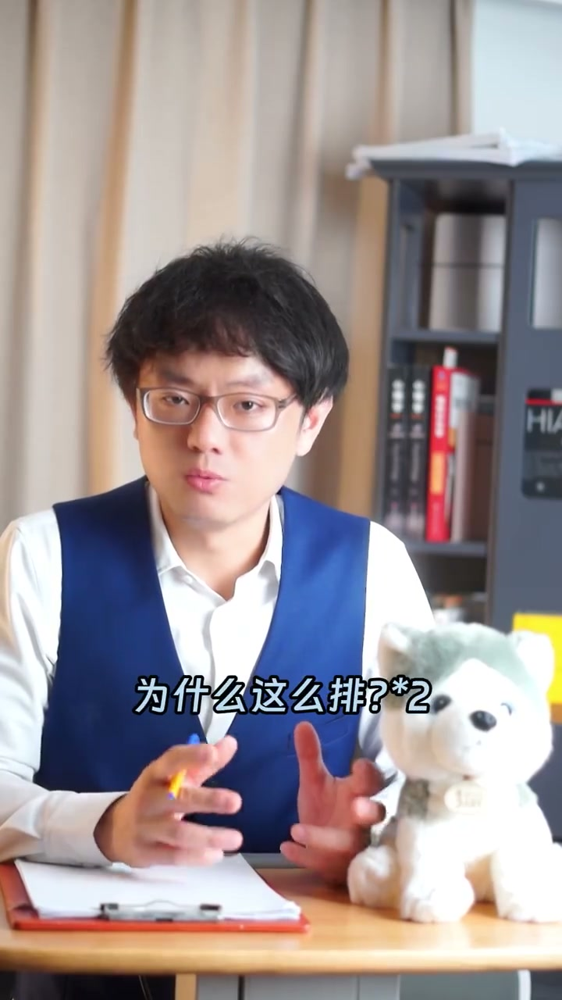

内容要点
讲PPT最难的不是做内容，而是听众记不住——一页讲完翻过去，内容立刻被忘光。我用一个「贫穷的三个原因」的实例演示了破解办法：讲完别急着翻页，抛出两个问题让听众自己排序、自己思考，你就能全场带节奏，还能在一旁看他们吵得不可开交。这个方法不费口水，比苦口婆心讲PPT有效得多。
知识结构
做PPT最大的难题是长时间抓住听众注意力。用「贫穷的三个原因」举例：欲望强、悟性差、起点低，讲完翻页内容立刻被忘记，39个字听众一个都回忆不起来。
第一个问题：三个原因按权重从高到低你会怎么排？第二个问题：为什么？理由是什么？然后停顿，听众会乖乖闭嘴去权衡。正确答案是没有正确答案，123、321、231都OK。
你要的不是排序结果，而是听众为了比较必须想明白这三点是什么。反复问「为什么」「怎么排」，挑逗他们吵架，你在旁边吃瓜看戏。比苦口婆心讲PPT有用多了，还不费口水。
PPT 讲完内容立刻被忘是常态，解法是讲完别翻页、抛出排序问题：让听众必须想明白内容本身，注意力自然就留住了。
00:00-00:42难题：PPT内容讲完就忘
做PPT汇报一定会遇到一个超级大难题：很难长时间抓住听众的注意力。
例子：一页PPT标题是「贫穷的三个原因」，下面写了三点——欲望强、能力有限，欲望无限，再多的钱也填不平；悟性差，在买房、跟谁结婚这些人生大事上总是一而再再而三做错选择，只能怪自己；起点低，山村孩子到大城市打拼，整天为生计忙碌，没时间想发展的事情。
讲者提醒：讲完这一页如果翻过去，内容会立刻被忘记——「我刚才讲了39个字，你能回忆得出来吗？」

00:43-01:41解法：提问排序法
有办法：讲完这一页不要翻过去，而是问两个问题。第一个：这三个原因如果让你按权重从高到低排序，你会怎么排？第二个：为什么？你的理由是什么？
然后停顿，台下所有人都会乖乖闭嘴，去权衡这三点到底是123、321还是231，原因到底是什么。
正确答案是没有正确答案，123、321、231都OK——因为你要的并不是排序的结果，而是为了做出比较，听众必须想明白这三点是什么，你的目标就达到了。
讲者笑称这招「阴险」还不费口水：只要不停重复「为什么」「怎么排」，甚至挑逗群众——「你们排的是123？你们排的是231？现在开始吵架，吵完告诉我结果」，然后他就在边上吃瓜看戏。这个方法比苦口婆心讲PPT有用多了。



完整转录（72段）
以下文本由 Whisper medium 模型自动转录，可能存在少量识别误差，已尽可能修正。
你的工作要不要跟人家讲PPT?
如果要的话,你一定会遇到个超级大难题
很难长时间抓住听众的注意力
比如,你的一页PPT上标题是
贫穷的三个原因
下面写了三点
第一点,欲望强
能力有限,欲望无限
再多的钱也填不平
第二点,物性差
关键选择总是做错
在买房跟谁结婚这些人生大事上总是一而再再而三犯错
只能怪自己物性差了
第三点,起点低
山村来的小孩到大城市打拼
起点太低
整天为生计而忙碌
没时间想发展的事情
好了,你在讲到这一页PPT时,请放心
如果讲完这一页,把这一页翻过去
这一页的内容会立刻被忘记
不行,我现在问你
我刚才讲了3.9个字
你能回忆后讲得出来吗?
怎么办呢?
有办法的啊
跟你分享个经验
下次在讲到这一页PPT后
不要翻过去
而是问两个问题
第一个问题
这三个原因
如果让你按全众
从高到低排序
你会怎么排?
第二个问题
为什么怎么排?
你的理由是什么?
然后停顿
台下所有听你讲的人
全部会乖乖闭嘴
他们会宰权衡
这三点原因
到底是123还是321
还是231
到底怎么个排序法?
原因到底是什么?
我告诉你正确答案
正确答案是
没有正确答案
123、321、231都OK
因为你要的并不是让他们排出去的结果
你要的是为了能做出比较
听众必须想明白
这三点是什么
然后才能排序
你的目标就达到了
你看,阴险吧
这么讲还不费口水
你只要不停地重复
为什么怎么排?
甚至挑逗群众、逗群众
我经常就这么干
你们排的是123
你们排的是231
好,现在你们开始吵架
吵完告诉我结果
然后我就在边上去吃瓜看戏了
很有乐趣
这个方法是不是比你
苦口婆心的讲烟片有用多了
还不费口水,多好啊